La vidéo de *Pursuing AI* dissèque la nouvelle mise à jour « ChatGPT Images 1.5 » d'OpenAI afin de séparer la véritable révolution technologique du simple argument marketing. L'analyste adopte une approche pragmatique et comparative, s'éloignant des démos superficiellement parfaites pour soumettre le modèle à des cas d'usage réels du quotidien (retouche photo, essayage virtuel et génération d'infographies). En confrontant directement l'outil à un cador du marché, *Nano Banana Pro*, il évalue froidement la précision, le respect du contexte et les limites structurelles des intelligences artificielles génératives actuelles.
Pour mener à bien son investigation, le créateur déploie une méthodologie empirique rigoureuse basée sur des scénarios concrets. Il teste d'abord la suppression d'éléments indésirables sur une photo de Noël pour mesurer l'intégrité de la retouche, puis éprouve la capacité d'essayage virtuel en habillant un sujet à partir d'un plan mi-corps, avant d'explorer la création d'infographies et les affiches publicitaires. Chaque cas d'usage est décortiqué pour observer la gestion des proportions, le réalisme des textures et la fidélité des sujets.
Cette analyse approfondie offre des bénéfices concrets majeurs pour les créateurs de vidéo et professionnels du numérique. Elle démontre que si les modèles actuels excellent dans la manipulation chirurgicale d'images (comme l'inpainting contextuel), ils pèchent encore sur la cohérence multisuport et la persistance des personnages d'un plan à l'autre. Pour les créateurs, comprendre ces seuils de rupture permet d'optimiser leurs workflows de production, d'éviter les pièges de l'hallucination visuelle et d'utiliser à bon escient les forces combinées de ces nouveaux outils génératifs.
OpenAI vient de sortir une nouvelle version de ChatGPT Images 1.5. Et à première vue, ça a l'air impressionnant. Mais la vraie question est de savoir si c'est réellement utile dans le monde réel, ou si c'est juste un autre générateur d'images avec un meilleur marketing. La plupart des critiques s'arrêtent aux démos tape-à-l'œil et aux jolies images.
Interface & Outils : Interface web de présentation de ChatGPT Images (OpenAI) avec des exemples de générations visuelles et de prompts.
Contenu textuel & Code : Texte principal "The new ChatGPT Images is here", boutons "Try in ChatGPT", "Learn more", ainsi que des exemples d'images générées et de prompts textuels (ex: "Combine the two men and the dog in a 2000s film camera-style photo of them looking bored at a kids birthday party").
Action / Démonstration : Présentation des capacités de génération et de modification d'images de la nouvelle version 1.5 de ChatGPT Images.
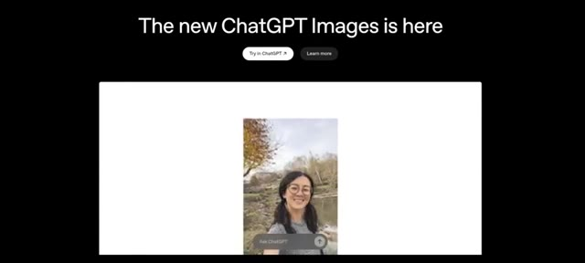
🔍 Agrandir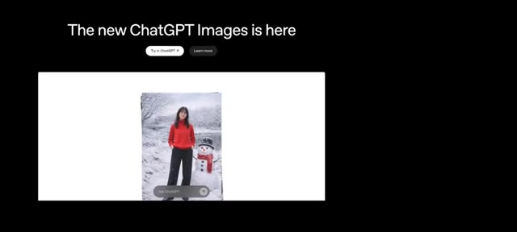
🔍 Agrandir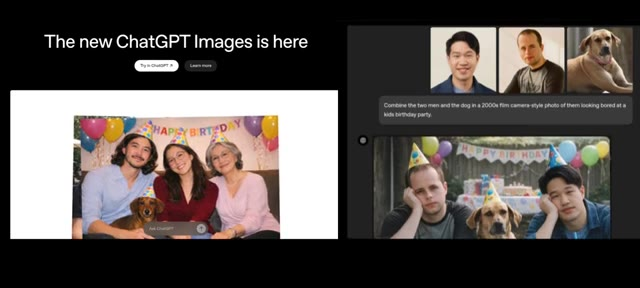
🔍 AgrandirJe ne l'ai pas fait. Au lieu de faire des tests irréalistes, j'ai recherché et testé Image 1.5 sur des cas d'usage réels, le genre de tâches qui importent vraiment aux gens, aux créateurs, aux développeurs et aux entreprises. Et pour comprendre où il se situe réellement, je l'ai comparé directement avec Nano Banana Pro, l'un des modèles d'image les plus puissants du moment.
Interface & Outils : Interface de présentation web et logicielle présentant de nouveaux modèles d'IA générative d'images ("The new ChatGPT Images is here" et "Nano Banana Pro").
Contenu textuel & Code : Texte affiché : "The new ChatGPT Images is here", boutons "Try in ChatGPT", "Learn more", et le titre "Nano Banana Pro" avec des vignettes d'exemples d'images générées et des prompts textuels de modification.
Action / Démonstration : Démonstration visuelle et comparaison des capacités de génération et de modification d'images entre les nouveaux modèles ChatGPT Images et Nano Banana Pro.
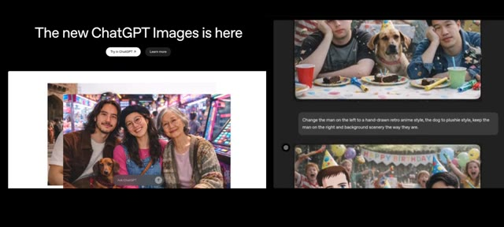
🔍 Agrandir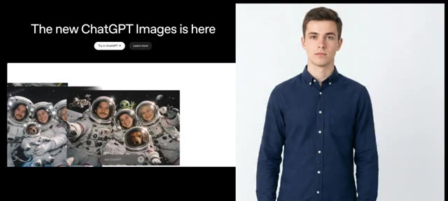
🔍 Agrandir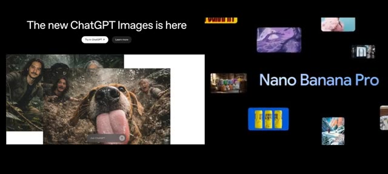
🔍 AgrandirPas de battage médiatique, pas d'exemples sélectionnés sur le volet. Juste de vrais tests, de vraies comparaisons et de vrais résultats. C'est Pursuing AI, et vous regardez le rapport de recherche. Commençons donc par le premier test, l'édition d'image. Car dans la vraie vie, les photos sont rarement parfaites. Par exemple, à Noël, vous prenez une photo près d'un sapin de Noël, mais des personnes aléatoires s'immiscent en arrière-plan et soudainement votre photo est gâchée.
Interface & Outils : Interface de ChatGPT (version sombre) affichant des discussions avec des images générées et éditées.
Contenu textuel & Code : Texte du prompt dans l'interface : "Remove all people from the background completely while keeping the main subject untouched. Preserve the face, facial features, skin texture, hair details, expression, clothing, body proportions, lighting, shadows, and overall image quality exactly as original. Do not alter the subject's appearance in any way. Ensure the background looks natural, clean, and seamless with no blur artifacts, distortions, or loss of detail. Maintain high resolution and realistic colors." Des flèches roses dessinées pointent sur les passants en arrière-plan de la photo.
Action / Démonstration : L'écran montre une interface de chat avec un prompt détaillé pour la retouche d'image (suppression d'arrière-plan), puis zoome sur la photo originale montrant une femme faisant un selfie devant un sapin de Noël avec des passants en arrière-plan signalés par des flèches.
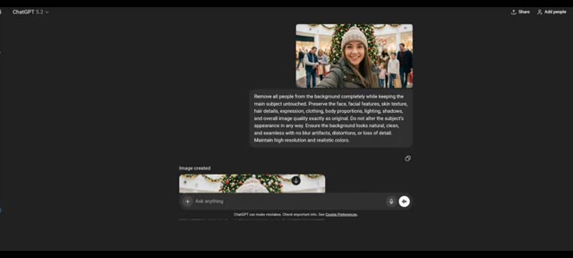
🔍 Agrandir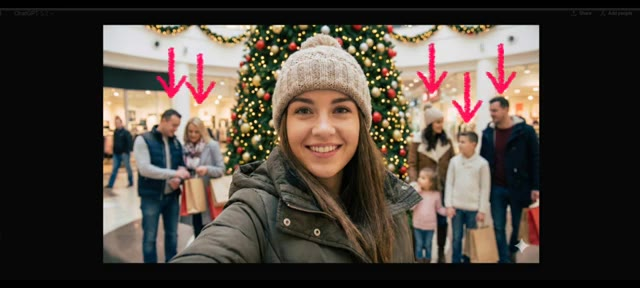
🔍 AgrandirDonc la vraie question est de savoir à quel point image 1.5 est douée pour supprimer des objets et des personnes sans détruire l'image ? Voici l'image que j'ai utilisée. J'ai demandé au modèle de supprimer les personnes en arrière-plan, et voici le résultat. Il a préservé les expressions faciales correctement, a supprimé toutes les personnes en arrière-plan, et a gardé le sujet principal complètement intact.
Interface & Outils : Interface sombre de ChatGPT 5.2 avec une zone de chat et des éléments de saisie textuelle.
Contenu textuel & Code : Texte du prompt visible : "Remove all people from the background completely while keeping the main subject untouched. Preserve the face, facial features, skin texture, hair details, expression, clothing, body proportions, lighting, shadows, and overall image quality exactly as original..."
Action / Démonstration : L'écran présente l'interface de ChatGPT avec l'image source et le prompt de modification, puis affiche le résultat avant/après de la suppression d'objets.
Maintenant, voici le résultat de Nano Banana Pro. Il a également supprimé les personnes en arrière-plan avec succès. Donc, dans ce test, les deux modèles fonctionnent bien. Passons maintenant à un cas d'usage plus pratique. Et si vous vouliez essayer un costume de Père Noël sur votre corps avant de l'acheter en ligne ? J'ai donc utilisé l'image d'un homme et demandé à un modèle d'ajuster ce costume sur son corps.
Interface & Outils : Interface de type chat IA (ChatGPT) et fenêtres de comparaison d'images.
Contenu textuel & Code : Texte du prompt visible : "Dress the man in a realistic Santa Claus costume. Replace his current clothing with a classic red Santa suit including the red coat with white fur trim, matching pants, black belt with gold buckle, and Santa hat. Preserve the man's original face, facial features, skin tone, expression, hairstyle, and body proportions exactly as they are..."
Action / Démonstration : Le présentateur compare les résultats visuels de suppression d'arrière-plan de deux modèles d'IA, puis introduit un test de retouche vestimentaire (essayage virtuel d'un costume de Père Noël) en montrant les images source et le prompt associé dans l'interface de l'IA.
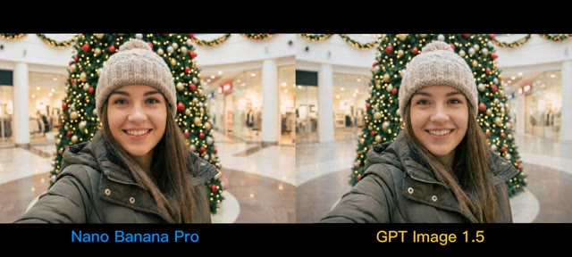
🔍 Agrandir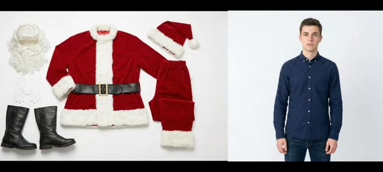
🔍 Agrandir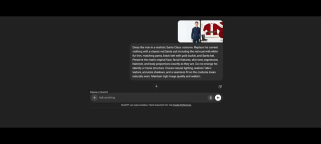
🔍 AgrandirVoici le résultat de l'image 1.5. Les vêtements s'ajustent naturellement. Le modèle préserve le visage correct, la tonalité de la peau et le réalisme global. Un détail important ici. Comme j'ai fourni uniquement une image à mi-corps, le modèle a correctement généré uniquement la partie supérieure des vêtements. Il n'a pas halluciné de pantalon ou de bottes.
Interface & Outils : Présentation visuelle de résultats d'essayage virtuel d'intelligence artificielle.
Contenu textuel & Code : À gauche, les éléments du costume de Père Noël (manteau, bonnet, ceinture, bottes, barbe). Au centre, l'image originale d'un homme en chemise bleue. À droite, le résultat de l'essayage virtuel où l'homme porte le costume de Père Noël.
Action / Démonstration : Le créateur montre le résultat de l'essayage virtuel et souligne que le modèle n'a généré que le haut du corps en fonction de l'image source fournie.
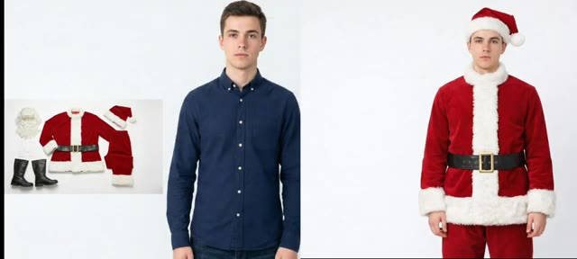
🔍 AgrandirC'est en fait un bon signe. Voici maintenant le résultat de Nano Banana Pro. Ça va aussi avec les vêtements, mais comme vous pouvez le voir, la tenue a l'air plus ample et moins naturelle. Donc dans ce cas, les deux résultats sont bons, mais l'image 1.5 gère légèrement mieux le réalisme. Maintenant, et si vous vouliez créer une infographie ?
Interface & Outils : Interface de démonstration et de comparaison d'images IA, puis interface d'affichage de résultats (style interface web / application de génération d'infographie).
Contenu textuel & Code : Textes visibles : "Nano Banana Pro", "GPT Image 1.5", et sur l'infographie de l'image 2 : "HOW MANY CALORIES ARE THERE IN YOUR HAMBURGER" avec la liste des ingrédients et des calories (Top Bun, Cheddar Cheese, Onions, Fresh Lettuce, etc., pour un total estimé de 1,090 kcal).
Action / Démonstration : Le présentateur compare visuellement deux images de vêtements générées par IA, puis passe à la présentation d'une infographie nutritionnelle générée par l'outil.
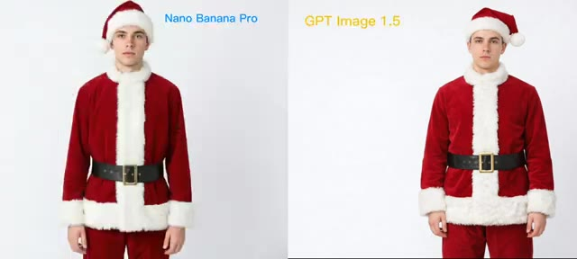
🔍 AgrandirOui, vous pouvez générer des infographies comme celle-ci. La mise en page, la structure et la clarté sont nettement améliorées par rapport aux anciens modèles. Parlons des limitations car aucun modèle n'est parfait. Et pour être juste, OpenAI a lui-même listé les limitations d'Image 1.5 sur son site web.
Interface & Outils : Interface web d'analyse ou de présentation de modèles d'IA avec des onglets de navigation (Markdown rendering, Calorie infographic, Coding, Deep sea poster, etc.)
Contenu textuel & Code : Sur l'image 1 : Une infographie titrée "HOW MANY CALORIES ARE THERE IN YOUR HAMBURGER" détaillant les ingrédients de 1 à 11 et indiquant un total estimé de 1,090 kcal. Sur l'image 2 : Un panneau "New" avec un prompt texte "create a poster of deep sea creatures at different depths..." et son résultat graphique comparé au panneau "Previous".
Action / Démonstration : Le présentateur illustre ses propos en affichant à l'écran des exemples concrets d'infographies générées pour appuyer l'amélioration de la disposition et de la structure.
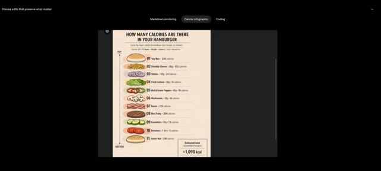
🔍 Agrandir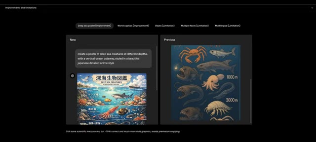
🔍 AgrandirPar exemple, si vous lui demandez de générer une affiche, les résultats sont bien meilleurs que les modèles précédents, mais il reste des problèmes. Il peut y avoir des inexactitudes scientifiques, quelques limitations de style artistique, et des problèmes de cohérence lorsque plusieurs sujets apparaissent dans une seule image. Comme vous pouvez le voir ici, cette fille change à travers l'image.
Interface & Outils : Interface utilisateur web de présentation d'améliorations et de limitations d'un modèle d'intelligence artificielle (génération d'images).
Contenu textuel & Code : Texte du prompt dans l'interface : "create a poster of deep sea creatures at different depths, with a vertical ocean cutaway, styled in a beautiful japanese detailed anime style". Légende en bas : "Still some scientific inaccuracies, but ~70% correct and much more vivid graphics, avoids premature cropping." Onglets de navigation : "Deep sea poster (Improvement)", "World capitals (Improvement)", "Styles (Limitation)", "Multiple faces (Limitation)", "Multilingual (Limitation)".
Action / Démonstration : Comparaison visuelle entre un ancien et un nouveau modèle de génération d'images, puis affichage d'une image générée démontrant des incohérences sur les visages de plusieurs sujets.
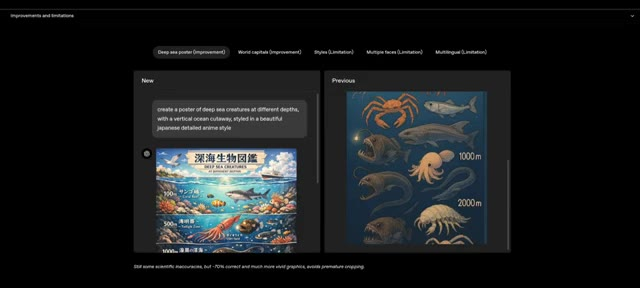
🔍 Agrandir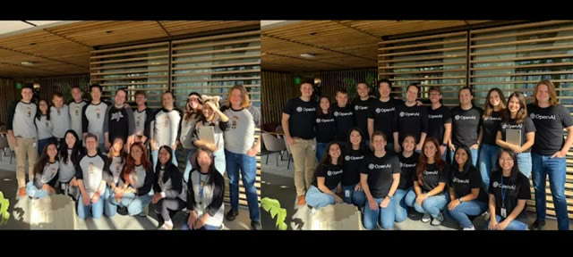
🔍 AgrandirCependant, une chose reste cohérente, Sam Altman. Et honnêtement, si le modèle modifiait Sam Altman, cette image serait probablement supprimée. Il y a aussi quelques limitations linguistiques, mais dans l'ensemble, c'est une nette amélioration par rapport au modèle précédent. C'est ma recherche pour la vidéo d'aujourd'hui.
Interface & Outils : Interface web de ChatGPT et pages de présentation du modèle d'image d'OpenAI.
Contenu textuel & Code : Texte de l'interface : "can you make them wear shirts that say 'OpenAI' and have everyone smiling", "When there are many people, the model has difficulty maintaining the exact identity of every person during editing tasks.", "How to Order Food in Chinese", "The new ChatGPT Images is here".
Action / Démonstration : Présentation des limitations du modèle d'IA lors de la modification d'images complexes et de la gestion du texte dans différentes langues.
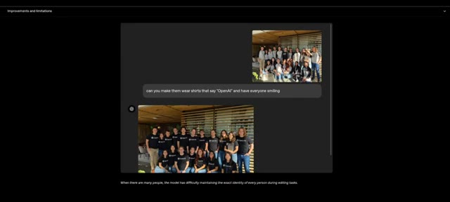
🔍 Agrandir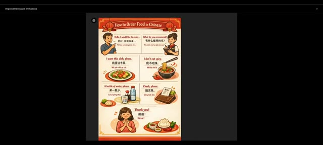
🔍 Agrandir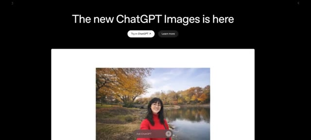
🔍 AgrandirSi vous avez trouvé cela utile, assurez-vous d'aimer, de vous abonner et de commenter vos réflexions ci-dessous. Je vous verrai dans le prochain rapport de recherche.
Interface & Outils : Navigateur web / superpositions graphiques d'appel à l'action YouTube.
Contenu textuel & Code : Texte partiel visible en arrière-plan lié à "GPT Images is here", logo "PAI" avec un cerveau relié à des circuits électroniques dans un cercle néon bleu, boutons d'interaction YouTube superposés (Like, Subscribe, notification).
Action / Démonstration : Affichage des éléments graphiques d'appel à l'action (incitation à s'abonner et à interagir avec la vidéo).